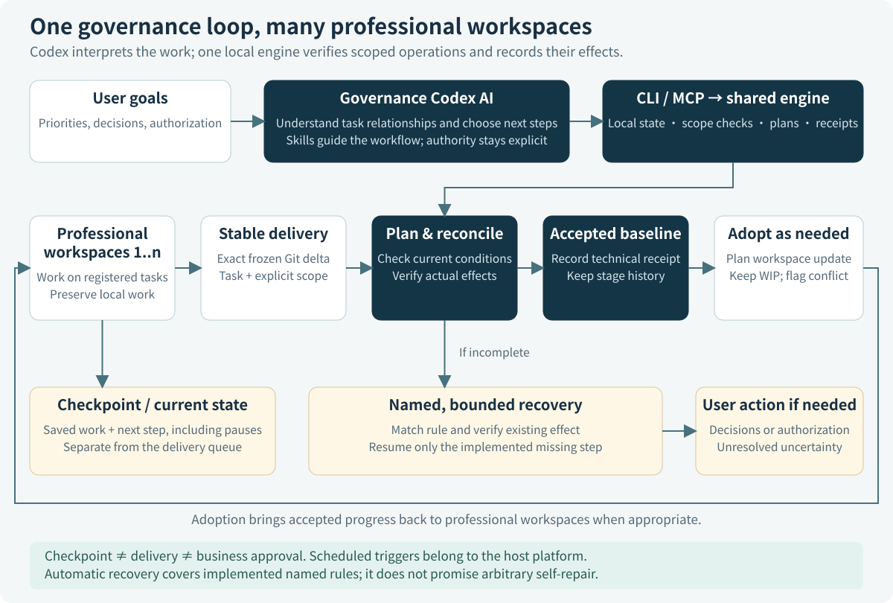
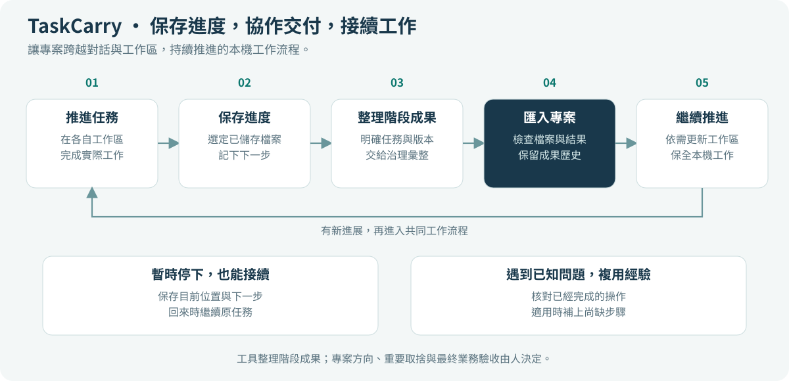

01 / CHECKPOINT
Work is saved工作已保存工作已保存
Selected saved files and a next step can be resumed. No automatic delivery or business completion.
指定的已保存文件和下一步可以接续，不自动转成交付，也不代表业务完成。
指定的已保存檔案和下一步可以接續，不自動轉成交付，也不代表業務完成。
Connect Codex to your project. Preserve work across sessions and coordinate delivery across multiple local workspaces.
把 Codex 接入你的项目，跨对话保存工作，并协调多个本地工作区的交付与接续。
把 Codex 接入你的專案，跨對話保存工作，並協調多個本地工作區的交付與接續。
Windows 完整操作流程Complete Windows workflowWindows 完整操作流程（繁體）
Selected saved files and a next step can be resumed. No automatic delivery or business completion.
指定的已保存文件和下一步可以接续，不自动转成交付，也不代表业务完成。
指定的已保存檔案和下一步可以接續，不自動轉成交付，也不代表業務完成。
A frozen Git delta has an explicit task and scope. Later worker edits do not change it.
冻结的 Git 变化具有明确任务和范围，不跟随后续工作区编辑变化。
凍結的 Git 變更具有明確任務和範圍，不隨後續工作區編輯而改變。
The local baseline includes the stage. Technical integration remains separate from business approval.
本地基线已包含该阶段；技术集成与业务批准仍分别判断。
本地基線已包含該階段；技術整合與業務批准仍分別判斷。


CLI and MCP use the same core; Skills guide their use. The AI interprets task relationships; scoped tools verify and execute their operations. A checkpoint can retain work without putting it in an acceptance queue.
CLI 与 MCP 使用同一内核，Skills 指导工具的使用。AI 理解任务关系，有限工具核验并执行操作。检查点可以保留工作，而不把它放入待接收队列。
CLI 與 MCP 使用同一核心，Skills 指引工具的使用。AI 理解任務關係，限定範圍的工具核驗並執行操作。檢查點可以保留工作，而不把它放入待接收佇列。
Automatic experience use currently covers the named reconciliation case where the expected Git effect exists but its receipt is missing: match the enabled rule, verify the effect, then finish the missing record. Other faults need bounded AI or maintainer assessment; unclear effects are not treated as success.
当前自动使用经验的范围，是已具名的接收场景：预期 Git 效果已经发生，但回执缺失。先匹配启用的规则并核验效果，再补齐记录。其他故障需要 AI 或维护者作有界判断；效果不明不会视为成功。
目前自動使用經驗的範圍，是已具名的接收情境：預期 Git 效果已經發生，但回執缺失。先比對已啟用的規則並核驗效果，再補齊記錄。其他故障需要 AI 或維護者作有界判斷；效果不明不會視為成功。
Codex or another host supplies scheduled triggers. The toolkit does not include an autonomous scheduler, unlimited self-repair, or distributed multi-computer coordination. Business decisions and new authorizations remain with the user.
定时触发由 Codex 或其他宿主提供。工具包不内建自主调度器、无限自修或多电脑分布式协调。业务取舍与新增授权仍由用户决定。
定時觸發由 Codex 或其他宿主提供。工具包未內建自主排程器、無限自修或多電腦分散式協調。業務取捨與新增授權仍由使用者決定。
Reuse suitable existing workspaces. If several chats share one directory, keep one main specialist writer there and continue other parallel responsibilities in separate workspaces and chats, preserving scoped WIP and history. Sequential subtasks do not require new chats.
合适的原工作区可以复用。多个旧窗口共用一个目录时，保留一个主要专业写入者，其余需要并行推进的职责在独立工作区和新窗口接续，按范围保全 WIP 与原历史。顺序推进的子任务不必另开窗口。
合適的原工作區可以複用。多個舊視窗共用一個目錄時，保留一個主要專業寫入者，其餘需要並行推進的職責在獨立工作區和新視窗接續，依範圍保全 WIP 與原歷史。依序推進的子任務不必另開視窗。
An empty CoGov directory does not establish that no previous work exists. Governance briefly checks unclear context before deciding the baseline. For an old chat: paste the summary prompt there, send its reply with the handoff prompt to governance, then paste governance’s return prompt back into that chat.
A complete inventory covers registered work, not every app chat. It records unfinished and paused work without automatically accepting it as completed output.
空 CoGov 不代表没有旧工作；治理先核对不明确的现场，再决定基线。旧窗接入：贴归纳提示词给旧窗，把回复连同转交提示词交给治理，再把治理生成的回贴提示词贴回原窗。
空 CoGov 不代表沒有舊工作；治理先核對不明確的現況，再決定基線。舊視窗接入：貼歸納提示詞給舊視窗，把回覆連同轉交提示詞交給治理，再把治理產生的回貼提示詞貼回原視窗。
完整盘点覆盖已登记工作，不代表自动发现全部应用聊天；未完与暂停工作保留状态，不自动作为完成成果接收。
完整盤點涵蓋已登記工作，不代表自動發現全部應用程式聊天；未完成與暫停工作保留狀態，不自動作為完成成果接收。